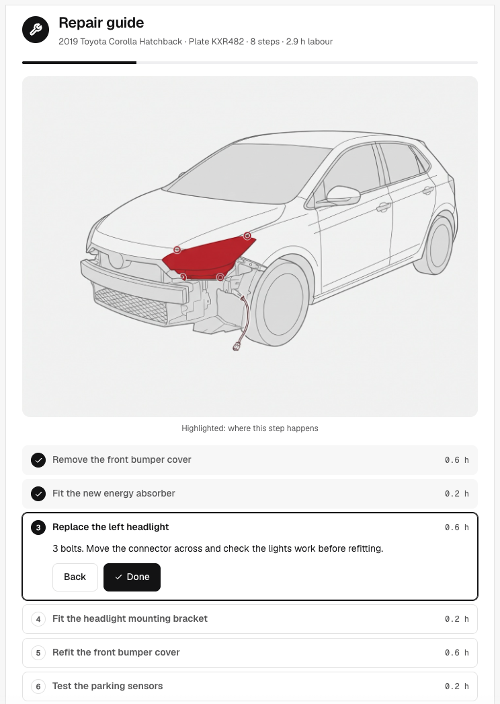
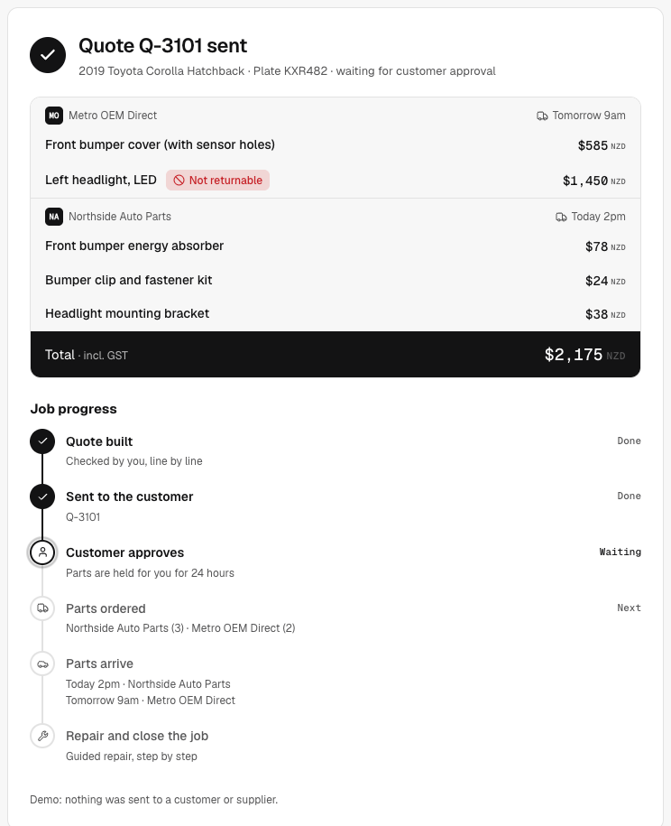
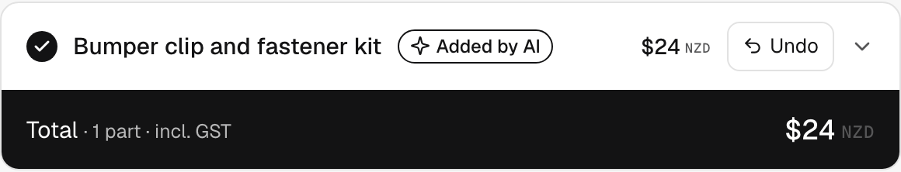
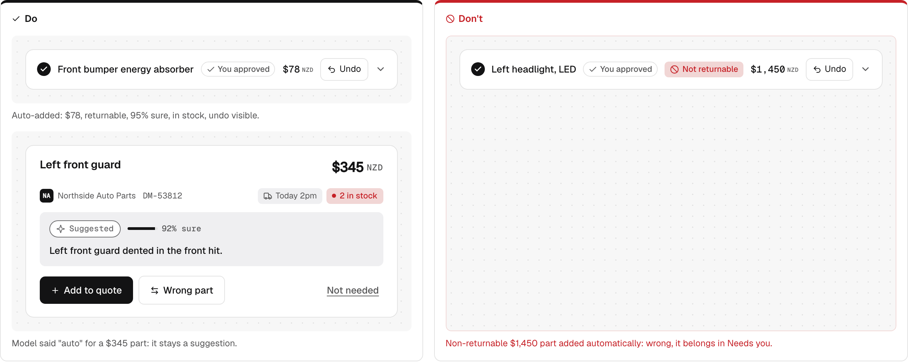
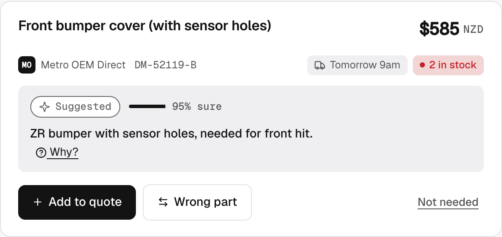
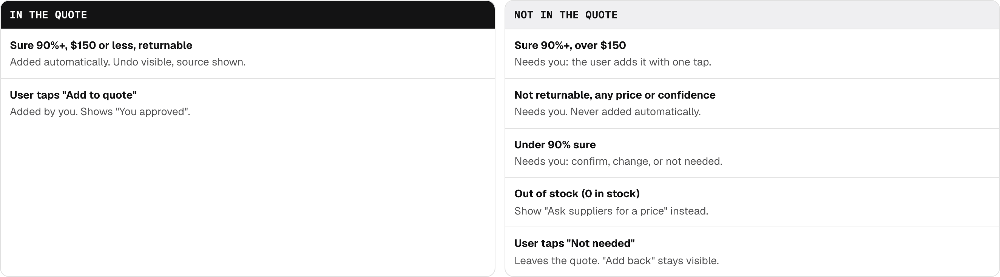

Osama Eldrieny · Senior Product Designer
Why this demo
Partly is building the infrastructure for anyone to repair anything. We're building frontier AI to put repair knowledge to work
Repairers train for years to be on the tools, then spend half their day on quotes, paperwork and finding parts.
Partly's product aims to automate the admin so repairers can focus on their craft.
behind it a system generates the interface the moment needs.
shows its reasoning with a confidence score
So we no longer design a set of pages. We design components, and then we design the brain the AI uses to assemble them.
wrong answer is a $1,000 part that can't be returned.
The challenges
…help a repairer start a quote without knowing what to type?
…turn the jobs a repairer repeats all day into one tap, with the same result every time?
…show just enough of the AI's reasoning to earn trust, and no more?
…decide what the design system fixes, and what the AI is free to generate?
The system
The AI decides what. The design system decides how.
The system
tokens.css colours, space, typecomponents.js the 15 componentsRULES.md the rulescatalog.json parts and pricesAfter the quote

Live demo
KXR482, a 2019 CorollaNo Wi-Fi? Open the offline version with recorded real answers.

Step 2


Step 2


Osama Eldrieny · Senior Product Designer